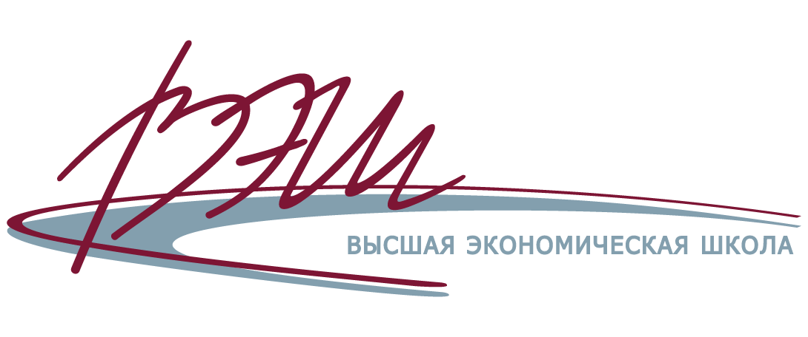

Стрелки
Направление, связь и последовательность. Соберём варианты и объясним, какую задачу решает каждый.
Набор ещё не добавлен
Команда ВЭШДемонстрация дизайн-центра Концепция сервиса 26 ноября 2026ИСХОДНИКИ И ПРАВИЛА ПРИМЕНЕНИЯ
Собираем иконки и графические элементы ВЭШ. У каждого — исходник, объяснение его роли и примеры: когда использовать и когда лучше выбрать другое решение.
Цвета, логотипы и шрифты собраны в отдельном разделе.
Открыть фирменный стиль →Здесь будут иконки по темам и задачам. Для каждой сохраним её значение, подходящий контекст, ограничения и пример в готовом материале.
Условные знаки обозначают категорию. Набор фирменных иконок предстоит собрать.
Стрелки, линии, подчёркивания, рамки и другие детали оформления. Схемы ниже показывают категории будущей коллекции.
Направление, связь и последовательность. Соберём варианты и объясним, какую задачу решает каждый.
Набор ещё не добавленПалочки, штрихи и разделители. Зафиксируем, как они помогают группировать и разделять содержание.
Набор ещё не добавленВыделение слова или мысли. Опишем допустимые акценты и ситуации, в которых подчёркивание мешает.
Набор ещё не добавлен
ФИРМЕННАЯ ГРАФИКА / SVG
Первый исходник в коллекции. Правила применения и примеры в макетах ещё предстоит описать.
Короткая история о смысле и применении помогает выбрать элемент для конкретной задачи. Карточку заполняем вместе с исходником.
ПЕРВЫЙ ЭТАП
Логотипы, палитра, типографика и базовые правила оформления материалов ВЭШ.
Здесь собраны постоянные ориентиры бренда: как выглядит логотип, какие цвета и шрифты используются и что важно сохранять в оформлении.
Иконки, стрелки, линии и другие элементы с объяснением их применения собираем в библиотеке дизайна →
Для документов, обложек и титульных слайдов.
Скачать PNG ↓Для компактных носителей и брендированной продукции.
Скачать PNG ↓Сохраняйте пропорции и исходные цвета. На тёмном фоне используйте белую подложку.
В исходном логотипе сохранены #7D1534 и #839FAE. Для графического акцента используется #8D1638 из сводного листа. В исходном слайде цветов есть расхождения подписей; они не служат основанием для перекраски логотипа.
ЗАГОЛОВКИ
Bold, ExtraBold или Heavy для русских заголовков. Курсив — для короткого акцента.
ОСНОВНОЙ ТЕКСТ
Regular для текста, Bold для выделения. Verdana — для писем.
ГРАФИКА
Используем исходные мотивы. Допускается перекраска в фирменные цвета.
Скачать SVG ↓Интерфейс и эскизы этого прототипа набраны Inter. Лицензионные шрифты не распространяются через Git; подключение Qanelas и Lato к будущему редактору и экспорту нужно проверить отдельно.
ПЕРВЫЙ ТЕСТ АВТОМАТИЗАЦИИ
Заполните данные один раз и проверьте, как они переходят в комплект карточек.
Фото преподавателя обозначено областью в макете. Загрузка, кадрирование и выходные размеры будут настроены по новым карточкам.
Одна замена темы, даты, спикера или фото обновляет весь комплект. Состояния «открыто» и «закрыто» и необходимые плашки берутся из утверждённого макета. Длинный текст, переносы и фото проверяются во всех носителях. Выходные изображения соответствуют согласованным размерам, а редактируемые исходники карточек сохраняются в Figma.
ПРОЕКТ ДЛЯ ОБСУЖДЕНИЯ
«Студия ВЭШ» — рабочее название. Единая точка входа в правила, исходники и подготовку фирменных материалов.
У каждого шаблона есть назначение, пример, редактируемый исходник, версия и понятные границы изменений. Сложные материалы передаются дизайнеру с готовым заданием.
В фирменном стиле фиксируем логотипы, палитру и типографику. В библиотеке дизайна собираем иконки, стрелки, линии, подчёркивания и другие элементы: с исходниками, правилами применения и примерами, когда использовать и когда не использовать.
Первый тест генератора — на новых карточках мастер-классов: состояния, плашки, соцсети и обложки. Исполнитель разработки и дата пилота не назначены.
Запросы команды: презентации, раздатка, блоки enKod, визуалы очных МК и требования к печати. Очерёдность и владельцев ещё предстоит определить.
После проверки пилота — другие комплекты и помощь с подбором изображений. База промптов предложена после определения стилистики; отдельного срока нет.
ПлощадкаБудущий раздел data.veshk.ru
ИнструментыFigma, PowerPoint, Wagtail, enKod
ИсходникиРедактируемые карточки в Figma; универсальная библиотека доступна и вне Figma
ПалитраСобрать фактические источники и подтвердить. Точных кодов на встрече не зафиксировали
Следующее обсуждениеОриентировочно через две недели, в среду или четверг. Точная дата не назначена
ОткрытоСхема доступа к исходникам, окончательная стилистика, порядок обновления шаблонов, распределение визуалов МК
Может ли сотрудник самостоятельно найти подходящий шаблон, заполнить его без поломки композиции и передать редактируемый материал? Замерим время выполнения, причины возврата дизайнеру и ошибки экспорта. Целевые значения согласуем после первого замера.
Новые корпоративные обложки и база промптов не утверждены. Прототип не закрепляет эти обязанности и не меняет доступ в платном пространстве Figma. Автоматическая публикация, генерация PPTX/PDF и подключение рабочих сервисов не реализованы.